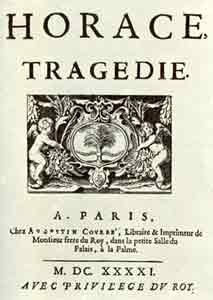

1640
• MOLIÈRE
J.-B. Poquelin sort du collège et prend « ses licences » à Orléans. Il se fait avocat, mais il abandonne rapidement cette carrière.
• VIE THÉÂTRALE ET LITTÉRAIRE
Corneille, Horace.
• ARTS, SCIENCES ET RELIGION
Les jésuites interdisent l'enseignement du cartésianisme dans leurs collèges.
Jansénius, Augustinus, à Louvain.
Querelle du Pur Amour (J.-P. Camus; A. Sirmond).
Le Père Lemoyne, Les Peintures morales, trois volumes (1640-1643).
Cureau de la Chambre, Les Caractères des passions, vol. 1 (vol. 5 en 1662).
Mort de Rubens.
